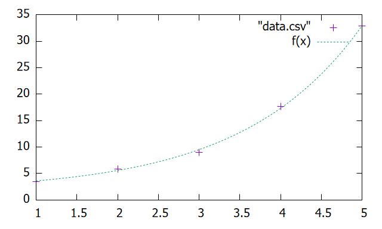
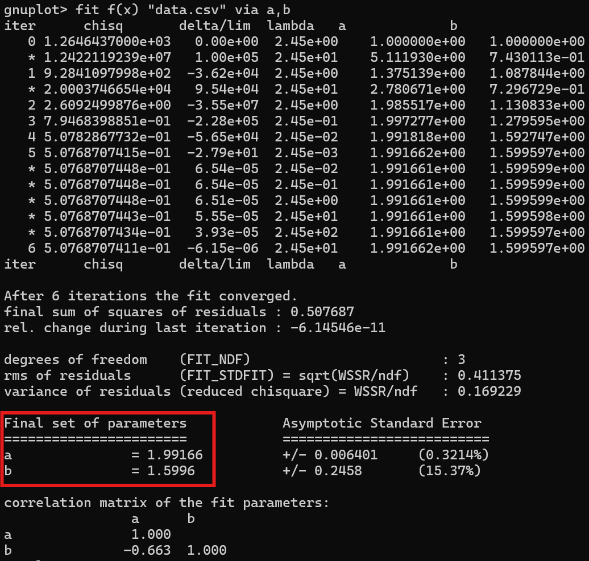

3-1. 近似曲線
このセクションでは、データを近似する曲線について紹介する。
fitコマンド
Gnuplotでは、データの近似曲線を生成するfitコマンドが用意されている。
fit func data u xcol:ycol{:err} via vars | 値 | 値の種類 | 説明 | 例 |
|---|---|---|---|
func |
関数 | 事前に定義した、フィッティング対象の関数 | f(x) |
data |
文字列 | データファイル | "data.dat" |
xcol |
数値 | xの値として使う列番号 | 1 |
ycol |
数値 | yの値として使う列番号 | 2 |
err |
数値 | データの誤差（エラーバー）を表す列 | 3 |
vars |
変数リスト | 変分パラメータ | a,b,c |
フィッティング関数および変分パラメータの初期値はあらかじめ定義しておく必要があり、例えば
a = 1; b = 1
f(x) = a * x + b
fit f(x) "data.csv" u 1:2 via a,b
plot "data.csv", f(x)のように書く必要がある。なお、fitコマンドは変分パラメータとして指定された変数の値を決定するコマンドであり、 変数の形を直接変化させるものではない。従って、例えば
a = 1; b = 1
f(x) = a * x + b
fit f(x) "data.csv" u 1:2 via a,b
a = 3; b = 3
plot "data.csv", f(x)のようにしてしまうとfitの結果がplot時点で消えてしまうことに注意。
フィッティングの結果はインタラクティブモードであれば簡単に確認できるので、近似式を求めたいだけであれば単に
$ a = 1; b = 1
$ f(x) = a * x + b
$ fit f(x) "data.csv" u 1:2 via a,b実行例
set datafile separator ","
a = 1; b = 1
f(x) = a**x + b
fit f(x) "data.csv" u 1:2 via a,b
plot "data.csv" ps 2, f(x) dt (5,5)
なお、インタラクティブモードにおいてfitコマンドに対する結果は次のように出る：

赤枠で囲んだ場所の表示が、最終的な変数の値である。ここを見ると、近似曲線は \( y = 1.99166^x + 1.5996\) であることがわかる。
- fitコマンドはあらかじめ定義された変分パラメータ入りの変数を最適化する。
- 近似式だけを知りたければ、インタラクティブモードを使うとよい。